🍴 Must-Try Restaurant & Food Guide: Dolomites, Venice & Madrid
This guide is structured to help you navigate dining seamlessly throughout the 16-day trip. To eliminate guesswork, restaurants and culinary experiences are strictly separated into two distinct categories:
- 🏔️ While "Out" (On-Trail & Mountain Excursions): High-altitude mountain rifugios, alpine dairy farms (malgas / schwaigen), panoramic pass lounges, and day-trip island trattorias visited mid-day during activities.
- 🍷 Near Lodging (Base Town Evenings & Dinners): Traditional inns (stuben), Michelin-starred agriturismi, wood-fired steak houses, canal-side bàcari, and historic taverns located walking distance or a short drive from your lodging.
For every venue, you will find the specific dishes you must order, the exact reservation requirements, and community research links (Reddit, Michelin, Saveur) backing up the recommendation.
📋 Quick Reference: Master Dining Matrix
Table 1: While "Out" (Lunches, Mountain Rifugios & Alpine Malgas)
| Day | Trail / Location | Venue & Type | Specific Foods to Try | Booking Required? |
|---|---|---|---|---|
| Day 3 | Val di Funes (Adolf Munkel) | Geisleralm (Alpine Rifugio) | Tris di Canederli, Kaiserschmarrn, Schlutzkrapfen | 🚶 Walk-in Only (Arrive by 11:30 AM) |
| Day 3 | Val di Funes (Adolf Munkel) | Gschnagenhardt-Alm (Family Malga) | Extra-Crispy Kaiserschmarrn, Goulash | 🚶 Walk-in Only |
| Day 4 | Alpe di Siusi (Meadow) | Malga Sanon (Alpine Chalet) | Brettljause, Grilled Alpine Steaks, Dumplings | 🚶 Walk-in Only |
| Day 4 | Alpe di Siusi (Meadow) | Gostner Schwaige (Artisanal Farm) | Mountain Herb Hay Soup, Flower Cheeses | 🚶 Walk-in Only (Small terrace) |
| Day 4 | Alpe di Siusi (Meadow) | Almrosenhütte (Pastry Hut) | Apfelstrudel with Vanillesauce, Hugo Spritz | 🚶 Walk-in Only |
| Day 5 | Seceda Summit (2,410m) | Sofie Hütte (Summit Lounge) | Apfelstrudel, Bombardino, Refined Tyrolean | 🚶 Walk-in Only (Terrace) |
| Day 5 | Seceda Ridgeline | Malga Pieralongia (Rustic Hut) | Fresh Buttermilk, Kaminwurz, Kaiserschmarrn | 🚶 Walk-in Only |
| Day 6 | Passo Gardena (Gran Cir) | Jimmi Hütte (Mountain Chalet) | Spinatspätzle con Panna e Speck | 🚶 Walk-in Only |
| Day 7 | Passo Falzarego (2,752m) | Rifugio Lagazuoi (Peak Rifugio) | Gulasch con Polenta, Bombardino | 🚶 Walk-in Only |
| Day 8 | Cinque Torri (Nuvolau Ridge) | Rifugio Averau (Fine Mountain Dining) | Casunziei all'Ampezzana, Game Ragù Pappardelle | 🚨 MUST BOOK IN ADVANCE |
| Day 8 | Cinque Torri (Rock Base) | Rifugio Scoiattoli (Panoramic Hut) | Canederli, Sautéed Polenta & Porcini | 🚶 Walk-in Only (Terrace) |
| Day 9 | Tre Cime / Lago di Misurina | Malga Misurina & Pizzeria Edelweiss | Fresh Alpine Ricotta, Wood-fired Pizza | 🚶 Walk-in Only |
| Day 13 | Burano Island (Venice) | Trattoria Al Gatto Nero (Seafood) | Spaghetti al Nero di Seppia, Risotto di Gò | 🚨 MUST BOOK IN ADVANCE |
Table 2: Near Lodging (Base Town Evenings, Dinners & Nightlife)
| Day(s) | Base Town / Area | Venue & Type | Specific Foods to Try | Booking Required? |
|---|---|---|---|---|
| Day 1 | Mestre (Piazza Ferretto) | Casa Fortuna / Ostaria Mariano | Venetian Seafood Pasta, Fritto Misto | ⚠️ Recommended (Phone) |
| Day 1 | Mestre (Piazza Ferretto) | Pizzium Mestre (Pizzeria) | Wood-Fired Neapolitan Pizza | 🚶 Walk-in (Quick turnaround) |
| Days 2–6 | Ortisei Center (Val Gardena) | Tubladel (Steak & Tyrolean) | Catalan-Oven Steaks, Braised Venison Goulash | 🚨 MUST BOOK IN ADVANCE |
| Days 2–6 | Ortisei Center (Val Gardena) | Mauriz Keller (Historic Cellar) | Schlutzkrapfen, Tris di Canederli, Wood Pizza | ⚠️ Recommended (Phone) |
| Days 2–6 | Ortisei Center (Val Gardena) | Sneton Stube (Ladin Tavern) | Authentic Tutres (Tirtlan), Ladin Goulash | ⚠️ Recommended (Tiny space) |
| Days 2–6 | Ortisei Center (Val Gardena) | La Cërcia (Wine & Aperitivo Bar) | Speck Alto Adige PGI Board, Lagrein Wine | 🚶 Walk-in Only |
| Days 7–11 | Cortina (Ampezzo Valley) | El Brite de Larieto (Agriturismo) | Farm Butter & Cheeses, Elevated Casunziei | 🚨 MUST BOOK IN ADVANCE |
| Days 7–11 | Cortina (North Valley) | Ristorante Ospitale (Historic Inn) | Massive Copper Pans of Venison Goulash | ⚠️ Recommended (Phone) |
| Days 7–11 | Cortina Center | Il Vizietto (Upscale Italian) | Adriatic Seafood Crudo, Fresh Tagliolini | 🚨 MUST BOOK IN ADVANCE |
| Days 7–11 | Cortina Center | Enoteca Cortina (Historic Wine Bar) | Pre-dinner Ombre, Alpine Charcuterie | 🚶 Walk-in Only |
| Days 12–13 | Venice (Cannaregio Canal) | Al Timon (Bàcaro & Steaks) | Canal Boat Cicchetti, Baccalà Mantecato | 🚶 Walk-in Only (Cicchetti) |
| Days 12–13 | Venice (Dorsoduro) | Cantina Schiavi (Bàcaro) | Award-Winning Crostini, Spritz al Select | 🚶 Walk-in Only |
| Days 12–13 | Venice (Cannaregio) | Paradiso Perduto (Lively Osteria) | Bigoli in Salsa, Seafood Platters | ⚠️ Recommended (Dinner) |
| Days 14–16 | Madrid (Plaza Mayor) | La Campana (Historic Bar) | Bocadillo de Calamares (Squid Baguette) | 🚶 Walk-in Only (Counter) |
| Day 14 | Madrid (La Latina) | Sobrino de Botín (est. 1725) | Cochinillo Asado (Roast Suckling Pig) | 🚨 MUST BOOK IN ADVANCE |
| Days 14–16 | Madrid (Malasaña) | Pez Tortilla (Craft Beer Bar) | Melosa Runny Tortilla de Patatas | 🚶 Walk-in Only (7:30 PM) |
| Days 14–16 | Madrid (Centro) | Chocolatería San Ginés (1894) | Churros y Porras con Chocolate Caliente | 🚶 Walk-in Only (24 Hours) |
🏔️ PART 1: While "Out" — Mountain Rifugios, Alpine Pastures & Excursions
These dining spots are built into your daytime hiking and sightseeing routes. They cannot be reached by walking from town; they are high on the peaks, along the trail, or on the Venetian islands.
Val di Funes (Day 3 — Adolf Munkel Trail)
1. Geisleralm (Rifugio delle Odle)
- Venue Type: Celebrated Alpine Mountain Hut & Sun Terrace
- Location: Midpoint of the Adolf Munkel trail, directly below the jagged Odle / Geisler spires.
- Reservations: 🚶 Walk-in Only. Arrive by 11:30 AM to secure prime outdoor tables.
- Specific Foods to Order:
- Tris di Canederli: Three baseball-sized bread dumplings (Speck Alto Adige, mountain spinach, and molten alpine cheese) drenched in browned alpine butter and chives.
- Kaiserschmarrn: Fluffy, rum-kissed shredded pancake caramelized in cast iron, served with tart lingonberry jam (Preiselbeeren) and warm applesauce.
- The Experience: Home to the famous "Geisler Cinema"—wooden deck chairs set on the pasture facing the vertical needle peaks.
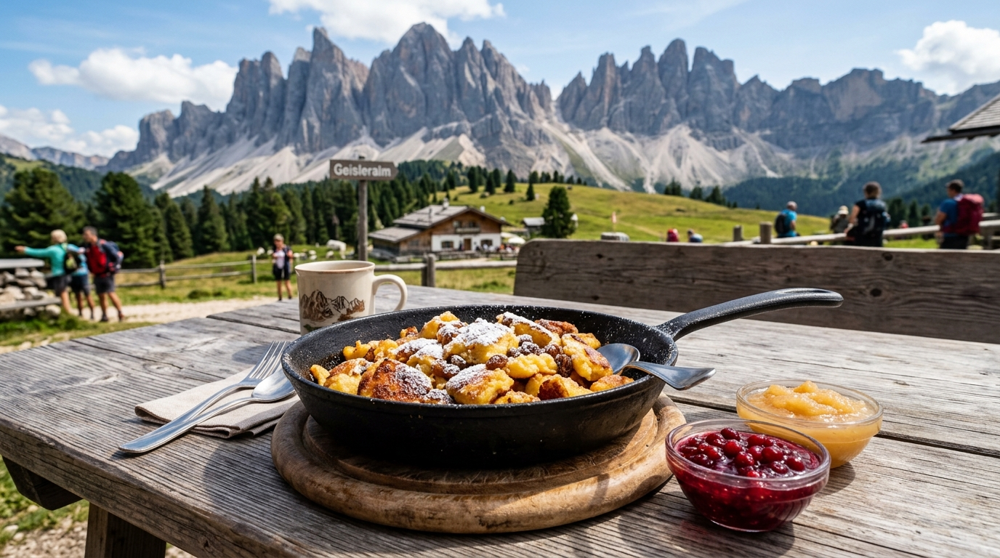
- Research & Hype Links:
- r/Dolomites: "Geisleralm Tris di Knödel with views of the Odle peaks — highlight of our trip"
- r/travel: "Kaiserschmarrn at Geisleralm is the single greatest dessert in the Alps"
- Official Portal: Geisleralm Gastronomy
2. Gschnagenhardt-Alm
- Venue Type: Traditional Family-Run Alpine Malga
- Location: 5-minute walk past Geisleralm on the Adolf Munkel loop.
- Reservations: 🚶 Walk-in Only.
- Specific Foods to Order:
- Extra-Crispy Kaiserschmarrn: Cooked in antique skillets for an extra-caramelized, crunchy outer crust.
- Tyrolean Beef Goulash: Hearty, peppery beef stew served with farm bread or polenta.
- Why Choose It: If Geisleralm's terrace is at maximum capacity, Gschnagenhardt offers an equally breathtaking, quieter, ultra-authentic alpine family experience.
Alpe di Siusi (Day 4 — E-Bike Meadow Day)
3. Malga Sanon (Sanon Hütte)
- Venue Type: High-Altitude Pasture Chalet & Grill
- Location: Rolling meadows of Alpe di Siusi, with unobstructed views of the Sassolungo and Sassopiatto massifs.
- Reservations: 🚶 Walk-in Only.
- Specific Foods to Order:
- Tyrolean Brettljause: A massive rustic plank of paper-thin Speck Alto Adige PGI, aged mountain cheeses, grated horseradish, and crunchy Schüttelbrot.
- Grilled Alpine Steaks: Local beef and game grilled over open coals.
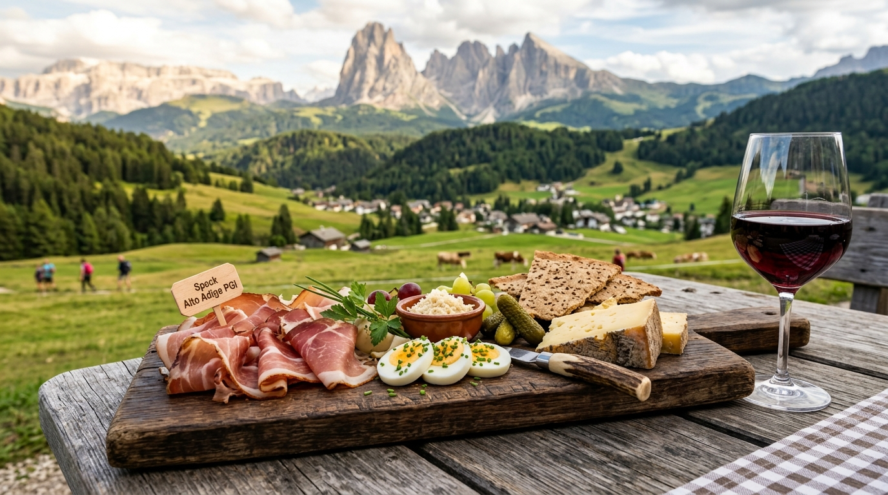
- Research & Hype Links:
- r/Dolomites: "Sitting on Alpe di Siusi with a Brettljause and local wine is pure heaven"
- Speck Alto Adige PGI Consortium
4. Gostner Schwaige
- Venue Type: Artisanal Alpine Dairy & Farm Kitchen
- Location: Eastern pastures of Alpe di Siusi (near Saltria).
- Reservations: 🚶 Walk-in Only (Tiny terrace; aim for a morning snack or early lunch).
- Specific Foods to Order:
- Heusuppe (Alpine Hay Soup): Served inside a hollowed-out loaf of crusty farm bread, infused with 15 meadow herbs.
- Flower-Pressed Artisan Cheeses: Farmhouse curd and raw milk cheeses made on-site by chef Franz Mulser, pressed with edible alpine blossoms.
- Research & Hype: Featured in international culinary magazines for elevating rustic farm food to haute cuisine.
5. Almrosenhütte
- Venue Type: Sun Terrace & Mountain Pastry Hut
- Location: Southern crest of Alpe di Siusi.
- Reservations: 🚶 Walk-in Only.
- Specific Foods to Order:
- Apfelstrudel Alto Adige: Flaky pastry stuffed with spiced orchard apples, toasted pine nuts, and raisins, swimming in warm vanilla cream.
- Hugo Spritz: Prosecco, local elderflower syrup, sparkling water, and fresh garden mint.
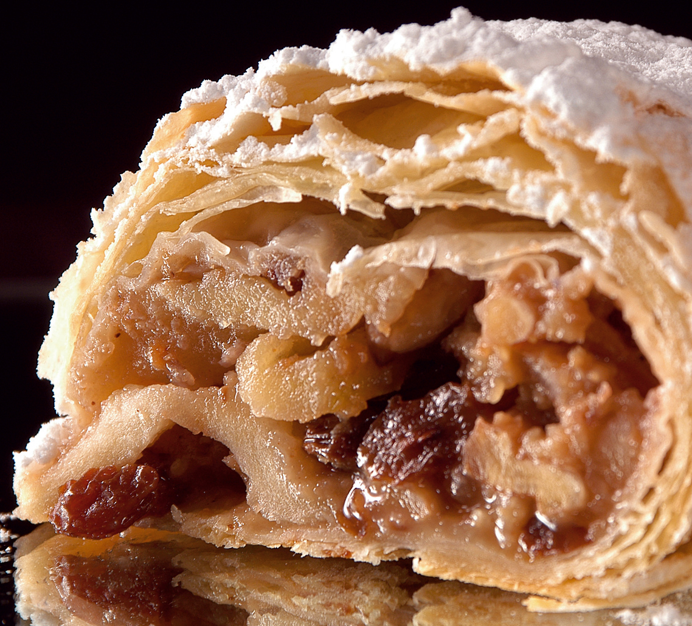
Seceda Summit & Ridge (Day 5 — Ridgeline Hike)
6. Sofie Hütte (2,410m)
- Venue Type: High-Altitude Panoramic Lounge & Wine Sanctuary
- Location: Directly below the Seceda cable car summit station.
- Reservations: 🚶 Walk-in Only for terrace lunch; indoor restaurant tables bookable.
- Specific Foods to Order:
- Il Bombardino: Steaming egg liqueur, brandy, espresso, and a mountain of whipped cream with cocoa.
- Elevated Schlutzkrapfen: Delicate spinach-ricotta rye mezzelune in hazelnut brown butter.
- South Tyrolean Pinot Noir & Lagrein: From an extraordinary cellar holding over 300 regional labels.
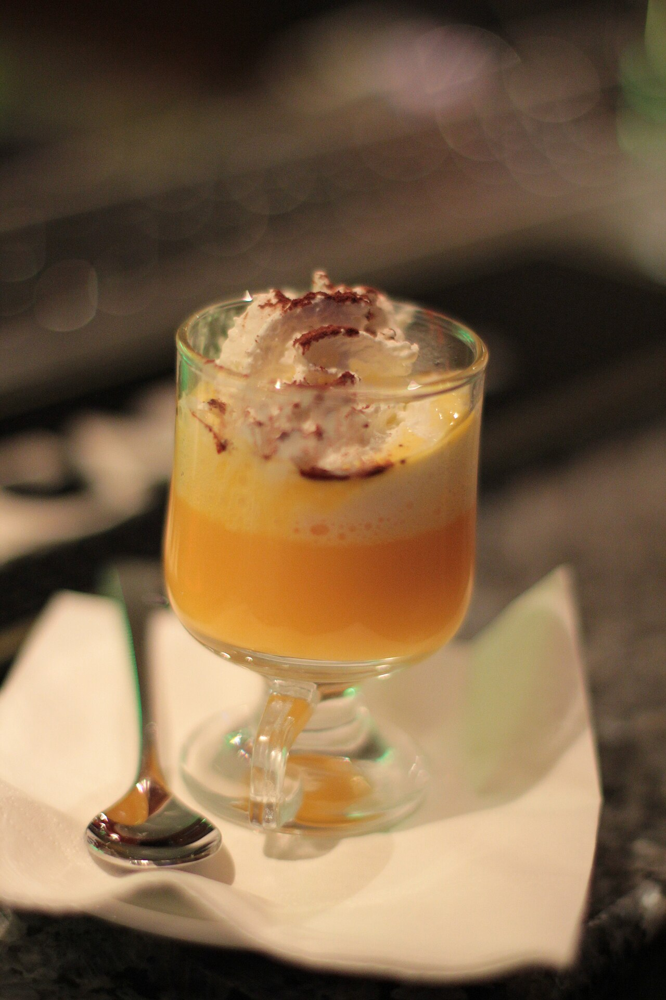
- Research & Hype Links:
- r/skiing: "The Italian Bombardino is objectively the greatest mountain beverage on earth"
- Punch Drink: How the Bombardino Conquered the Italian Alps
7. Malga Pieralongia
- Venue Type: Historic Alpine Stone Barn & Snack Hut
- Location: Along Trail 2B between Seceda and the Pieralongia twin needle rocks.
- Reservations: 🚶 Walk-in Only. Cash only!
- Specific Foods to Order:
- Fresh Buttermilk (Buttermilch): Freshly churned daily from cows grazing the ridge.
- Kaminwurz & Schüttelbrot: Smoked cured pork sausages snapped with crunchy caraway bread.
- The Experience: Friendly donkeys freely wander the picnic benches while you rest below the spires.
Passo Gardena / Gran Cir (Day 6 — West Split Day)
8. Jimmi Hütte & Dantercepies Mountain Lounge
- Venue Type: Alpine Chalets at Passo Gardena (2,220m)
- Location: Top of Dantercepies gondola / base of the Gran Cir scramble.
- Reservations: 🚶 Walk-in Only.
- Specific Foods to Order:
- Spinatspätzle con Panna e Speck: Vibrant green spinach drop-dumplings drenched in heavy cream and crisped Speck Alto Adige batons.
- South Tyrolean Goulash Suppe: Spicy paprika broth packed with tender beef.
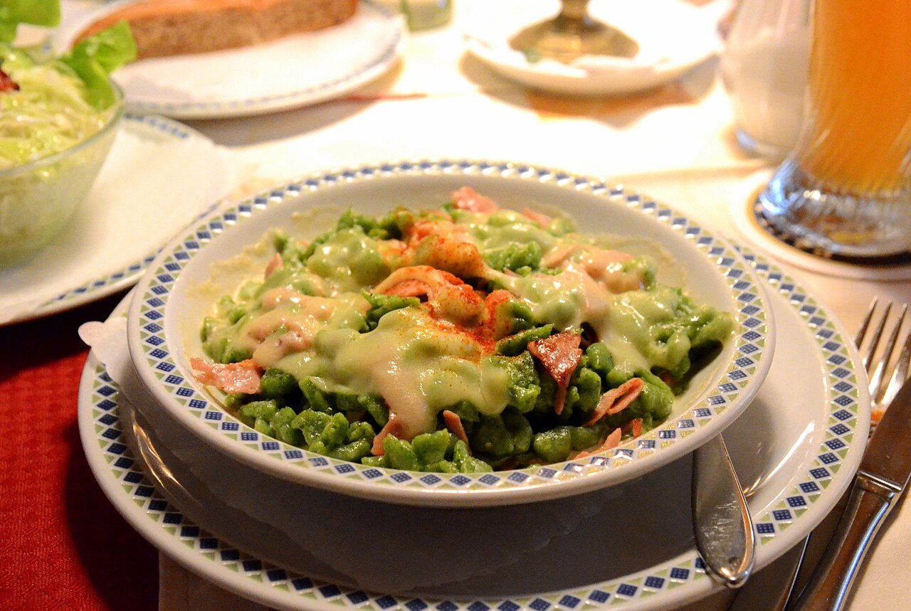
- Research & Hype Links:
- r/Dolomites: "Spinach Spätzle at Jimmi Hütte after doing Gran Cir hit every single spot"
Great Dolomite Road (Day 7 — Transit Day)
9. Rifugio Lagazuoi (2,752m)
- Venue Type: Eagle's Nest Mountain Rifugio
- Location: Clifftop summit of Mount Lagazuoi above Passo Falzarego (reached via cable car).
- Reservations: 🚶 Walk-in Only for self-service terrace and bar.
- Specific Foods to Order:
- Gulasch Altoatesino con Polenta: Deep, rich beef stew served over steaming stone-ground polenta.
- Mid-Day Bombardino or Espresso: Consumed 2,752 meters in the sky with clouds drifting below the deck.
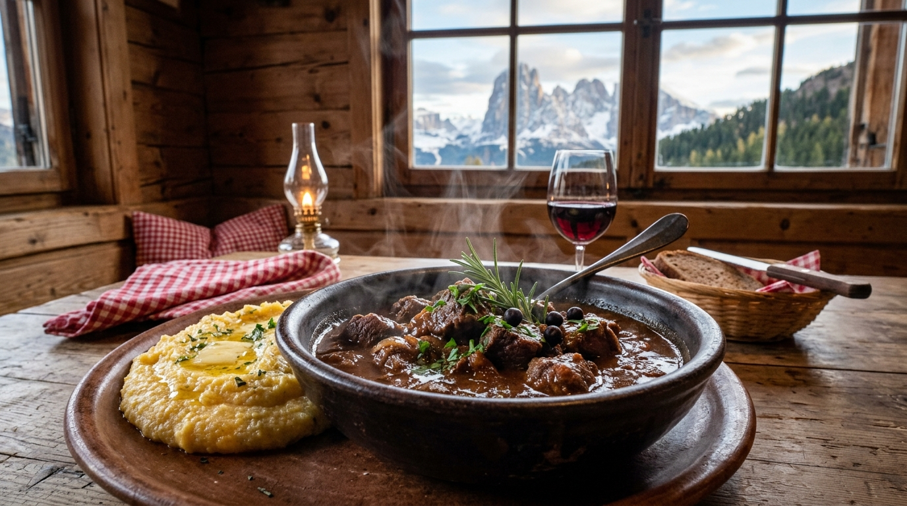
Cinque Torri & Nuvolau (Day 8 — Tower Loop & Ridge Hike)
10. Rifugio Averau (2,413m)
- Venue Type: Globally Renowned Mountain Gourmet Kitchen
- Location: Forcella Nuvolau, between Cinque Torri and Mount Nuvolau.
- Reservations: 🚨 MANDATORY ADVANCE BOOKING REQUIRED.
- How to Book: Email
rifugioaverau@gmail.comor call+39 0436 46602–3 weeks ahead. Book lunch for 5 adults at ~12:30 PM. - Specific Foods to Order:
- Casunziei all'Ampezzana: Ampezzo's legendary crescent ravioli packed with sweet magenta beetroot and ricotta, finished with foaming butter and poppy seeds.
- Pappardelle al Capriolo: Thick hand-cut egg pasta with slow-braised venison ragù and blueberries.
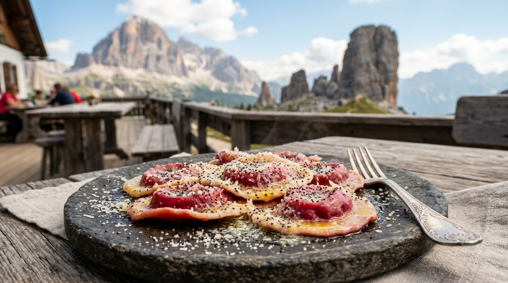
- Research & Hype Links:
- r/ItalyTravel: "Rifugio Averau pasta is seriously on another level compared to standard hut food"
- r/Dolomites: "Book Rifugio Averau for lunch on your Cinque Torri day — the Casunziei are legendary"
- Cortina Dolomiti Tourism: Casunziei all'Ampezzana Heritage
- Earth Trekkers: Why Averau's Food is a Must-Do
11. Rifugio Scoiattoli (2,255m)
- Venue Type: Iconic Panoramic Chalet
- Location: Directly at the top of the 5 Torri chairlift, gazing straight into the rock face.
- Reservations: 🚶 Walk-in Only (Terrace tables turn over quickly).
- Specific Foods to Order:
- Polenta e Funghi Porcini con Formaggio Fuso: Creamy polenta blanketed in pan-fried wild porcini and melted alpine cheese.
Tre Cime di Lavaredo (Day 9 — Three Peaks Day)
12. Lago di Misurina Lakeside Huts
- Venue Type: Lakeside Chalets & Pizzerias
- Location: Shore of Lago di Misurina (1,756m), 15 min drive down from Rifugio Auronzo.
- Reservations: 🚶 Walk-in Only.
- Specific Foods to Order:
- Fresh Alpine Ricotta & Cheeses at Malga Misurina.
- Crisp Thin-Crust Pizza at Pizzeria Edelweiss overlooking the calm lake waters.
Venetian Lagoon Excursion (Day 13 — Burano Island)
13. Trattoria Al Gatto Nero (Burano)
- Venue Type: World-Famous Lagoon Seafood Trattoria
- Location: Island of Burano (45 min vaporetto boat ride from Venice center).
- Reservations: 🚨 MANDATORY ADVANCE BOOKING REQUIRED.
- How to Book: Reserve 3–4 weeks in advance via their website or phone (
+39 041 730120). - Specific Foods to Order:
- Spaghetti al Nero di Seppia: Handmade pasta coated in glossy, savory Adriatic cuttlefish ink.
- Risotto di Gò: Creamy carnaroli risotto cooked in a broth of lagoon rock goby fish—Anthony Bourdain's all-time favorite Venetian dish.
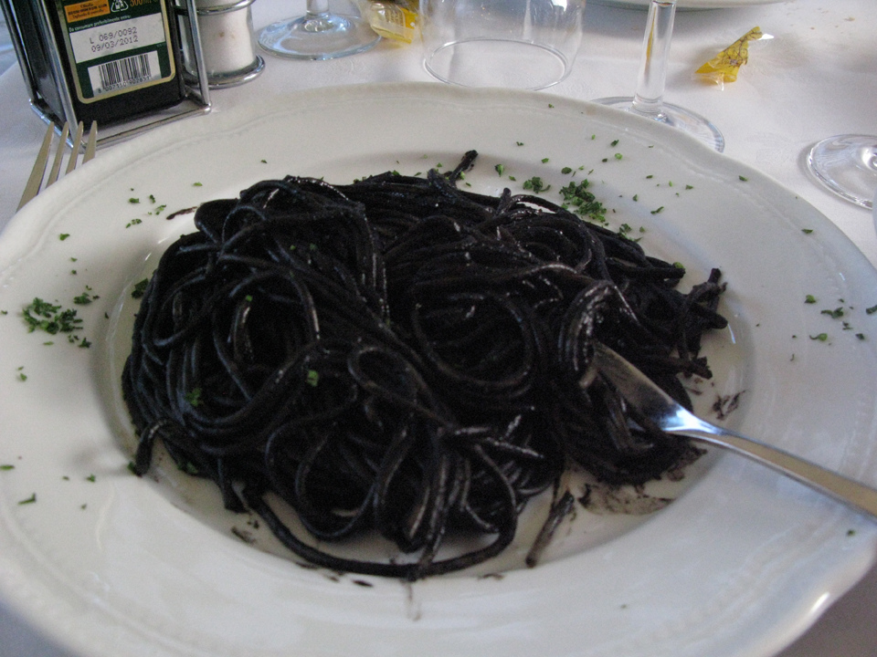
- Research & Hype Links:
- r/ItalyTravel: "Al Gatto Nero in Burano lives up to every bit of the hype — squid ink pasta and risotto di gò"
- Saveur: The Seafood Traditions of Burano and Al Gatto Nero
🍷 PART 2: Near Lodging — Evening Dinners & Base City Taverns
These restaurants are located right in your base towns. You can walk to them from your apartment or hotel, or take a short 5-minute taxi/drive after showering off the trail.
Base 1: Venice-Mestre (Day 1 — Arrival Evening)
Lodging: Via della Brenta Vecchia, 34 (Near Piazza Erminio Ferretto)
14. Ristorante Casa Fortuna & Ostaria da Mariano
- Venue Type: Authentic Local Venetian Seafood Trattorias
- Location: 5–15 min walk from your Mestre apartment.
- Reservations: ⚠️ Recommended for dinner (Call
+39 041 972620for Casa Fortuna). - Specific Foods to Order:
- Peoci Saltai: Black mussels sautéed with garlic, black pepper, and white wine.
- Fritto Misto dell'Adriatico: Lightly dusted fried squid, calamari, and lagoon sardines.
15. Pizzium Mestre
- Venue Type: High-Energy Neapolitan Pizzeria
- Location: Directly on Piazza Ferretto (5 min walk from apartment).
- Reservations: 🚶 Walk-in Friendly (Fast seating).
- Specific Foods to Order:
- Wood-Fired Pizza Margherita with Bufala DOP: Perfect comforting, zero-stress dinner after your trans-Atlantic flight.
Base 2: Ortisei / Val Gardena (Days 2–6)
Lodging: Apartments Promenade, SASLONCH (Via Stufan 72 — 5–10 min walk to center)
16. Restaurant Tubladel
- Venue Type: Renowned Rustic-Chic Alpine Grill & Stube
- Location: Str. Trebinger, 22, Ortisei (8 min walk from apartment).
- Reservations: 🚨 MANDATORY ADVANCE BOOKING REQUIRED.
- How to Book: Book 2–3 weeks in advance online at tubladel.com or call
+39 0471 796879. - Specific Foods to Order:
- Dry-Aged Tomahawk & Local Beef: Prepared in their patented wood-burning Catalan oven.
- Slow-Braised Venison / Deer Ossobuco: Ultra-tender wild game with herb polenta.
17. Mauriz Keller
- Venue Type: Atmospheric Historic Beer & Wine Cellar
- Location: Piazza San Antonio, Ortisei center (6 min walk from apartment).
- Reservations: ⚠️ Recommended for dinner (Call
+39 0471 796415). - Specific Foods to Order:
- Schlutzkrapfen Fatti in Casa: Hand-crimped spinach and ricotta mezzelune with nutty brown butter and Trentingrana.
- Stinco di Maiale al Forno: Whole roasted crispy Bavarian-style pork knuckle with sauerkraut.
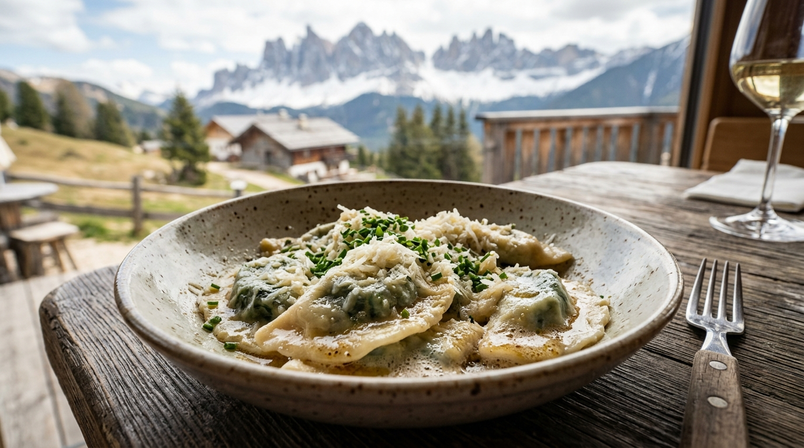
18. Sneton Stube
- Venue Type: Intimate Ancestral Ladin Tavern (Stube)
- Location: Str. Sneton, Ortisei center (7 min walk from apartment).
- Reservations: ⚠️ Recommended Booking (Tiny wood-paneled room; call
+39 0471 796798). - Specific Foods to Order:
- Ladin Tutres (Tirtlan): Deep-fried golden rye pockets stuffed with sauerkraut or spinach and curd.
- Traditional Ladin Barley Soup (Panicia): Rich, smoky soup simmered with pork shank and vegetables.
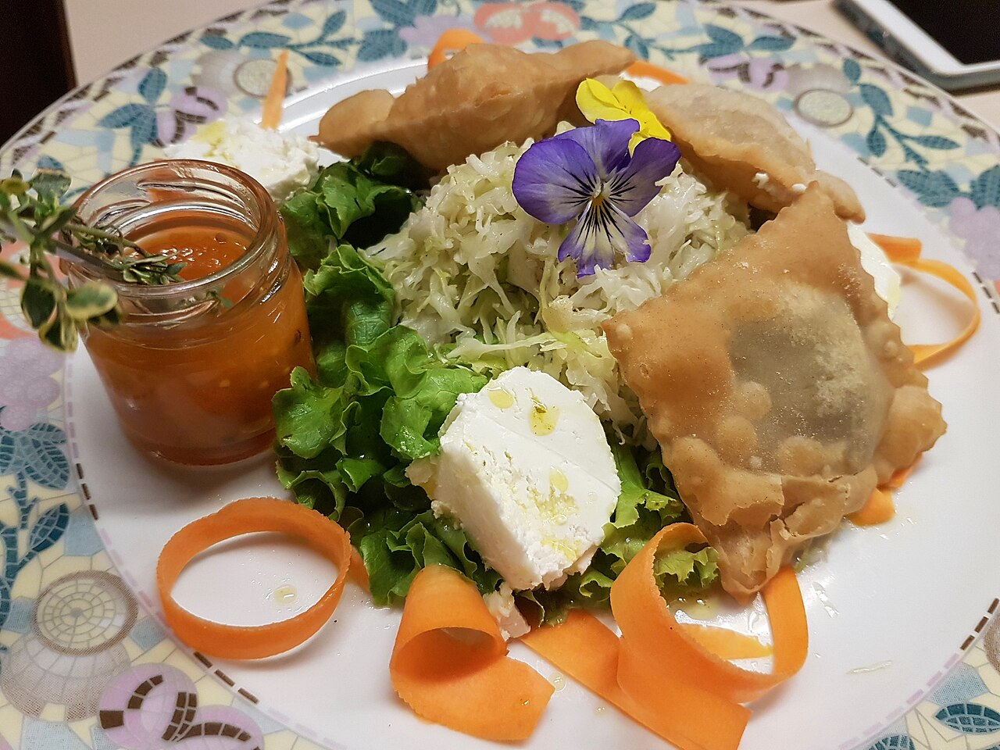
19. La Cërcia
- Venue Type: Rustic Wine & Aperitivo Bar
- Location: Str. Rezia (pedestrian high street, 6 min walk from apartment).
- Reservations: 🚶 Walk-in Only.
- Specific Foods to Order:
- Tagliere Misto di Salumi e Formaggi: Premium Speck Alto Adige PGI, cured bresaola, and alpine cheeses paired with local Lagrein red wine or Forst craft beer.
Base 3: Cortina d'Ampezzo (Days 7–11)
Lodging: Cortina Town Center / Immediate Valley
20. El Brite de Larieto
- Venue Type: Michelin Green Star Agriturismo & Mountain Farm
- Location: Larieto pine forest (7 min drive east of Cortina center).
- Reservations: 🚨 MANDATORY ADVANCE BOOKING REQUIRED.
- How to Book: Book 3–4 weeks ahead online at elbritedelarieto.it.
- Specific Foods to Order:
- Farmstead Butter & Sourdough: Churned that morning from the cows right outside the window.
- Elevated Casunziei with Mountain Herbs: Refined beetroot ravioli made with ancient grain flours.
- Charcuterie Cured in Mountain Larch Wood: In-house charcuterie from their own livestock.
21. Ristorante Ospitale
- Venue Type: Historic 11th-Century Coaching Inn
- Location: Località Ospitale (10 min drive north of Cortina on SS51).
- Reservations: ⚠️ Recommended for dinner (Call
+39 0436 4585). - Specific Foods to Order:
- Copper Pan Venison Goulash: Giant copper skillets of fork-tender venison goulash ladled tableside with steaming polenta.
- Canederli Pressati (Pressknödel): Pan-fried alpine cheese dumplings served over warm cabbage salad with hot bacon fat.
22. Il Vizietto di Cortina
- Venue Type: Contemporary Refined Italian
- Location: Corso Italia pedestrian zone, Cortina center.
- Reservations: 🚨 MANDATORY ADVANCE BOOKING REQUIRED.
- How to Book: Book 2 weeks ahead online or call
+39 0436 863804. - Specific Foods to Order:
- Fresh Adriatic Tagliolini: Hand-cut pasta with sweet red shrimp and zucchini blossoms.
- Pistachio-Crusted Lamb Chops: A refined break from heavy alpine stews.
23. Enoteca Cortina
- Venue Type: Historic Wine Bar (Serving since 1965)
- Location: Via del Mercato, Cortina center.
- Reservations: 🚶 Walk-in Only.
- Specific Foods to Order:
- Glass of Amarone or Franciacorta paired with small bites of venison salami and pickled wild mountain mushrooms before dinner.
Base 4: Venice Island (Days 12–13)
Lodging: Cà Landillo, Cannaregio (Rio Terà Farsetti, 1844)
24. Al Timon & Cantina Schiavi
- Venue Type: Iconic Venetian Bàcari (Canal Wine Bars)
- Location:
- Al Timon: Fondamenta dei Ormesini, Cannaregio (3 min walk from Cà Landillo!)
- Cantina Schiavi: Fondamenta Nani, Dorsoduro.
- Reservations: 🚶 Walk-in Only.
- Specific Foods to Order:
- Baccalà Mantecato Crostini: Whipped Norwegian stockfish mousse on crusty bread or grilled white polenta.
- Sarde in Saor: Sweet-and-sour fried sardines with onions, raisins, and pine nuts.
- Spritz al Select: The authentic Venetian spritz (Select bitters, not Aperol).
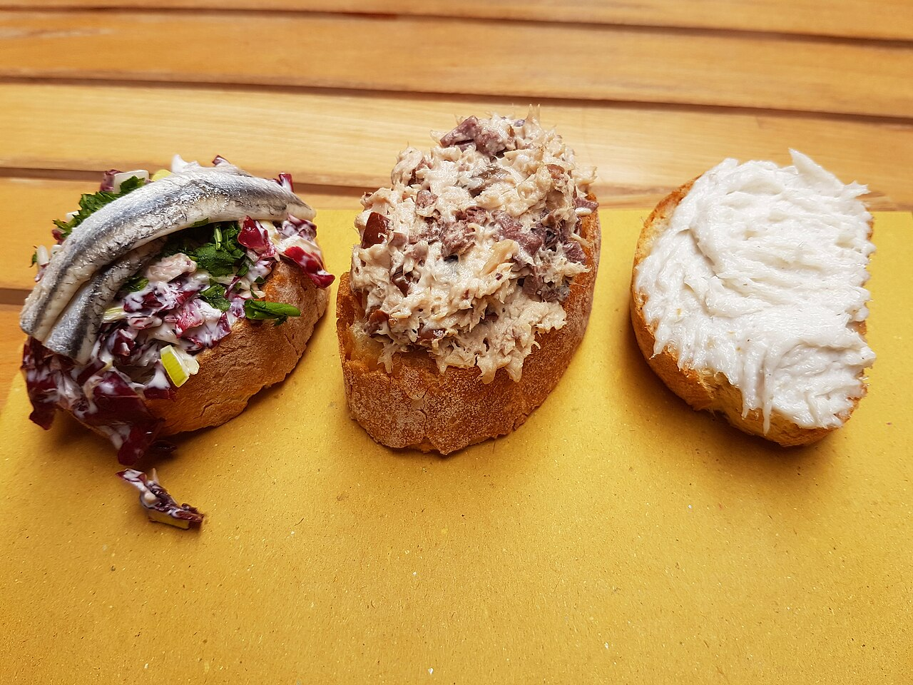
- Research & Hype Links:
- r/ItalyTravel: "The best evening in Venice: cicchetti crawl along the Cannaregio canals"
- r/travel: "Baccalà mantecato at Al Timon changed my perception of Venetian food"
25. Paradiso Perduto
- Venue Type: Boisterous Canal-Side Osteria & Live Music
- Location: Fondamenta della Misericordia, Cannaregio (4 min walk from Cà Landillo).
- Reservations: ⚠️ Recommended for dinner (Call
+39 041 720581). - Specific Foods to Order:
- Gran Piatto di Frutti di Mare: Enormous seafood platter with razor clams, langoustines, and octopus.
- Bigoli in Salsa: Ancient Venetian whole-wheat pasta tossed in slow-melted anchovies and onions.
Base 5: Madrid (Days 14–16)
Lodging: Central Madrid (Malasaña / Chueca / Centro)
26. Sobrino de Botín (est. 1725)
- Venue Type: World's Oldest Continuously Operating Restaurant (Guinness World Records)
- Location: Calle de Cuchilleros, 17 (Near Plaza Mayor).
- Reservations: 🚨 MANDATORY ADVANCE BOOKING REQUIRED.
- How to Book: Book 3–4 weeks ahead online at botin.es. Request a table in la bodega (16th-century brick cellar).
- Specific Foods to Order:
- Cochinillo Asado: Whole suckling pig roasted in a 300-year-old oak wood oven. Glass-crisp blistered crackling skin over butter-soft pork, carved before you with the edge of a ceramic plate!
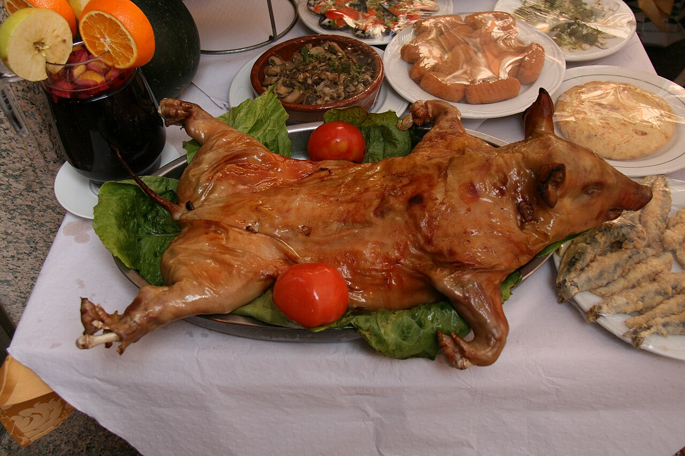
- Research & Hype Links:
- Guinness World Records: Oldest Restaurant in the World (Botín, 1725)
- r/travel: "Dinner at Sobrino de Botín in Madrid: the suckling pig lives up to 300 years of reputation"
27. La Campana (Plaza Mayor)
- Venue Type: Historic Street Food Sandwich Bar
- Location: Calle de Botoneras, 6 (Right off Plaza Mayor).
- Reservations: 🚶 Walk-in Only (Counter service).
- Specific Foods to Order:
- Bocadillo de Calamares: Crusty Spanish baguette packed with steaming, crispy golden squid rings and fresh lemon (~€4).
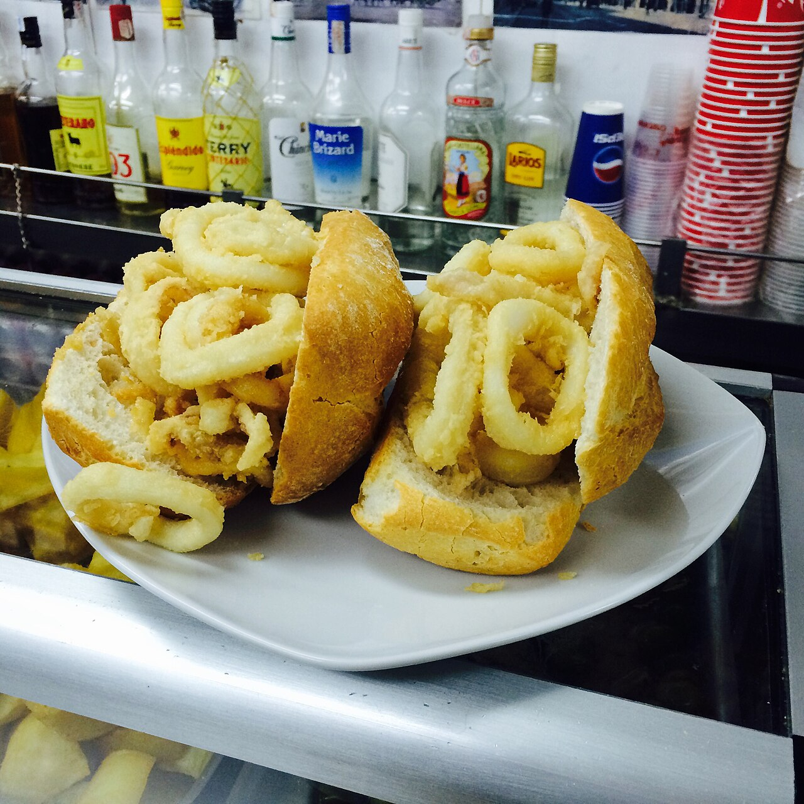
- Research & Hype Links:
- r/Madrid: "La Campana bocadillo de calamares is the best €4 you will ever spend in Madrid"
28. Pez Tortilla & Chocolatería San Ginés
- Venue Type: Modern Craft Beer Tapas Bar & 1894 Churrería
- Location:
- Pez Tortilla: Calle del Pez, 36, Malasaña (Heart of nightlife).
- Chocolatería San Ginés: Pasadizo de San Ginés, 5 (Open 24 hours).
- Reservations: 🚶 Walk-in Only.
- Specific Foods to Order:
- Tortilla de Patatas Estilo Melosa (at Pez Tortilla): Thick, molten, runny-center potato omelette stuffed with caramelized onions or truffle & brie.
- Churros y Porras con Chocolate (at San Ginés): Midnight crispy fried dough dipped into thick bittersweet dark drinking chocolate after the ANYMA concert.
| Melosa Runny Tortilla | San Ginés Churros con Chocolate |
|---|---|
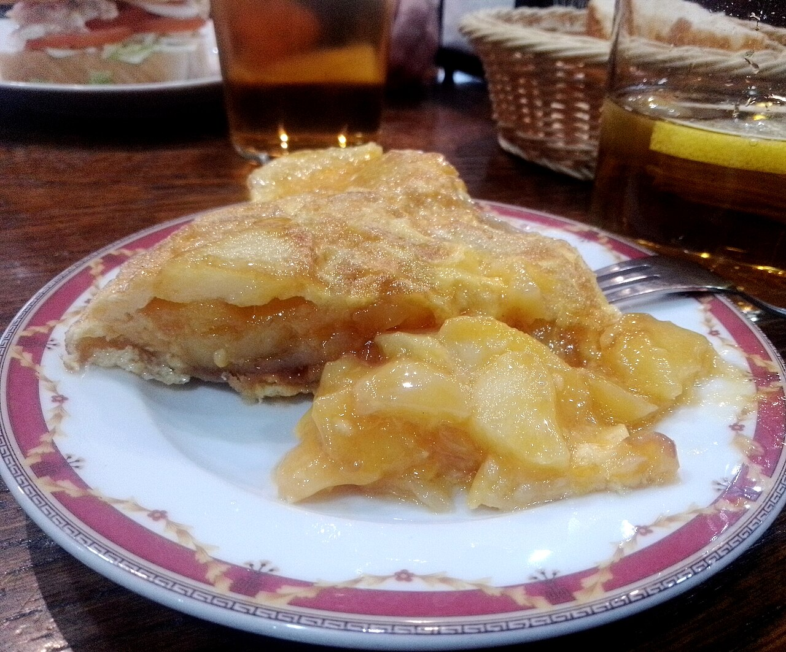 |
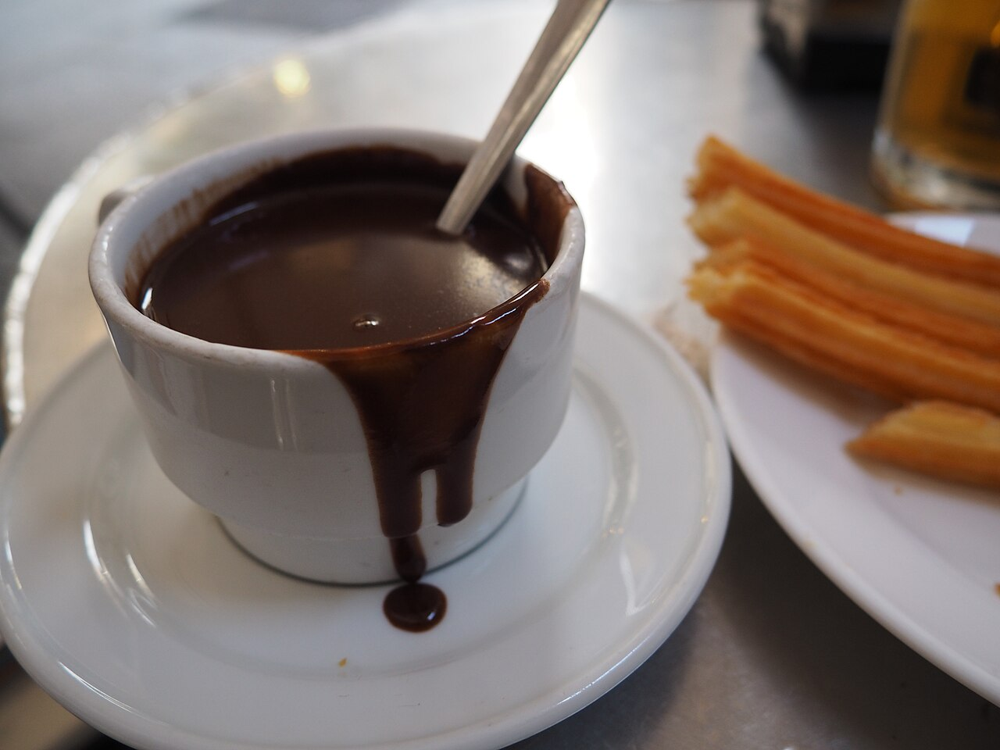 |
- Research & Hype Links:
- r/Madrid: "Pez Tortilla in Malasaña is hands down the best runny tortilla and craft beer combo in the city"
- r/travel: "Chocolatería San Ginés churros con chocolate at 1 AM after a night out is unbeatable"
📅 Actionable Reservation Timeline (Group of 5 Adults)
Mark these exact dates on your calendar to ensure our group doesn't miss out:
3 to 4 Weeks Before Departure (Mid-August 2026):
- [ ] Rifugio Averau (Day 8 Lunch): Email
rifugioaverau@gmail.comto book an outdoor table for 5 adults at 12:30 PM for Casunziei all'Ampezzana. - [ ] Sobrino de Botín (Day 14 Dinner): Book online at botin.es for 5 adults in la bodega for wood-fired Cochinillo Asado.
- [ ] El Brite de Larieto (Day 8 or 11 Dinner): Book online at elbritedelarieto.it for Michelin Green Star farm dining in Cortina.
- [ ] Trattoria Al Gatto Nero (Day 13 Lunch): Book online or call
+39 041 730120if visiting Burano Island for squid-ink pasta.
2 Weeks Before Departure (Late-August 2026):
- [ ] Tubladel (Day 2 or Day 6 Dinner): Book online at tubladel.com for wood-oven steaks and game in Ortisei.
- [ ] Il Vizietto (Day 7 or 10 Dinner): Book online or call
+39 0436 863804for upscale dining in Cortina center.
Days You Can Freely Walk In:
- All Trailside Rifugios (Geisleralm, Malga Sanon, Sofie Hütte, Jimmi Hütte, Lagazuoi, Scoiattoli): High-capacity terraces, no reservations needed. Just arrive before peak lunch rush (11:30 AM–12:15 PM).
- Venice Bàcari (Al Timon, Cantina Schiavi): Counter ordering, mingling along the canals.
- Madrid Street Food (La Campana, Pez Tortilla, San Ginés): Counter ordering and casual seating.